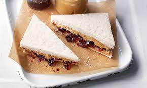

Peanut Butter & Jelly Sandwich

A dish that consists of peanut butter and jelly sandwiched between two pieces of white bread.
This sandwich is an American classic. Children are more known for eating this type of sandwich. It's described as
being soft, sticky and sweet. You can make your peanut butter and jelly sandwich any way you please. You can use
crunchy or smooth peanut butter. You can also choose any flavor of jelly (or jam) you please.
Ingredients
Feel free to use the peanut butter and jelly type you prefer!
- White Bread - 2 Slices
- Peanut Butter - 2 TBSPs
- Strawberry Jelly - 2 TBSPs
Steps
- Place the two slices of white bread side by side on a cutting board
- Spread the peanut butter on the top of the first slice of bread
- Spread the jelly on the top of the second slice of bread
- Pick up the slice of bread with peanut butter on it and place it on top of the slice of bread with jelly on
it.
Note* The peanut butter and jelly should be touching and make up the interior of the sandwich